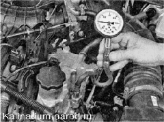

Давление масла проверкаЕсли при работе прогретого до рабочей температуры двигателя на холостом ходу загорается лампа аварийного давления масла, то необходимо убедиться, что: а) уровень масла в поддоне картера двигателя соответствует норме (см. «Уровень масла - проверка ); б) в двигатель залито масло в соответствии с заводской инструкцией по эксплуатации; в) исправен датчик давления масла и его провод не замкнут на «массу». Целостность изоляции провода датчика проверяют визуально. Для проверки самого датчика заменяют его заведомо исправным и запускают двигатель. Если контрольная лампа продолжает гореть, значит, датчик исправен; г) из двигателя не доносятся посторонние звуки (стуки, скрежет), свидетельствующие о проворачивании шатунных или коренных вкладышей или неисправности масляного насоса. Для выполнения работы потребуется манометр. Последовательность выполнения 1. Подготавливаем автомобиль к выполнению работы. 2. Запускаем двигатель и прогреваем его до рабочей температуры. 3. Заглушив двигатель, снимаем датчик аварийного давления масла. 4. Заворачиваем в посадочное отверстие датчика наконечник манометра. 5. Запускаем двигатель и проверяем давление масла на холостом ходу и при частоте вращения коленчатого вала около 5400 об/мин. У исправного, прогретого до рабочей температуры, двигателя давление масла на оборотах холостого хода должно быть не менее 196,2 кПа (2 бар), а давление масла на высокой частоте вращения коленчатого вала 441,3637,4 кПа (4,5-6,5 бар). Если давление ниже нормы, то двигатель нуждается в капитальном ремонте. Если давление масла при высокой частоте вращения коленчатого вала выше нормы, то, вероятно, неисправен предохранительный (редукционный) клапан масляного насоса. 6. По окончании проверки устанавливаем датчик на место. |